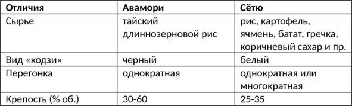

О культуре пития .. Авамори – рисовый самогон из Окинавы..


Авамори – алкогольный напиток крепостью 30—60% (обычно 35—45%) об., производимый путем сбраживания и дистилляции браги из длиннозерного тайского риса на японском острове Окинава. Авамори запоминается специфическим, сложно передаваемым вкусом и сильным ароматом. Чем старше сорт, тем он «душистее». Для западных ценителей спиртного запах может показаться чрезмерно сильным: одновременно чувствуются земляные, сладковатые и даже цветочные нотки, хотя ни один из этих ингредиентов не входит в состав.
Сами окинавцы называют свое спиртное «островным саке» («шима-саке») или просто и коротко – «шима». Название напитка приблизительно переводится как «полный пены», от японских слов «ава» – «пена» и «мори» – «наполняться». Возможно, это связано с тем, что в процессе перегонки рисовое сырье дает много пены. По другой версии, «ава» означает «пшено», из которого когда-то изготавливали первый авамори.
Первые письменные свидетельства существования авамори относятся к XV веку, в те времена это был придворный напиток государства Рюкю. Поставщиками королевского двора стали 30 семей, получивших наследственное право «гнать» и продавать рисовый самогон. Многие из сегодняшних производителей являются родственниками тех винокуров. В период с XV по XIX век авамори был частью дани крошечного островного государства могущественным соседям – Китаю и Японии, что почти никак не отразилось на невысокой популярности напитка за пределами архипелага. В 1879 году Окинава вошла в состав Страны восходящего солнца, но «островная водка» так и не потеснила с пьедестала саке.
В 1945 году бомбардировки армии США уничтожили запасы элитного авамори (срок выдержки некоторых бутылок достигал 200—300 лет). В ходе последующей американской оккупации национальный напиток уступил на местном рынке западному алкоголю, в частности виски. В 1983 году правительство Окинавы издало указ, регулирующий технологию производства авамори. Появилась четкая граница между этим дистиллятом и другими видами рисовых дистиллятов. Сегодня центры потребления авамори сосредоточены преимущественно в окинавских диаспорах и на самом архипелаге.
Особенности производства Авамори
Для настоящего авамори годится только длиннозерный рис, импортируемый из Таиланда («тай-май»). Дробленые зерна заливают теплой водой, затем варят на паровой бане, добавляют воду, дрожжи и местный черный плесневый грибок кодзи (иногда эту плесень ошибочно относят к дрожжам), который перерабатывает крахмал на сахар. Полученную массу отправляют на ферментацию (брожение).
Примерно через полмесяца отыгравшую брагу подвергают однократной перегонке, после чего напиток готов к употреблению. Однако чаще всего молодой авамори переливают в керамические сосуды и выдерживают от шести месяцев до 30 лет (хотя встречается и более длительная выдержка). Сегодня уже не все производители строго следуют традициям, поэтому иногда окинавский алкоголь может стариться не в керамических или глиняных кувшинах, а в обычных дубовых бочках.
Виды авамори
– Обычный (выдержка до трех лет);
– ароматизированный (с добавлением пряностей и отдушек). К этому виду относится не более 1—2% от общего объема;
– кусу (дословный перевод – «старая жидкость», выдержка от трех лет). «Кусу» – оригинальное окинавское произношение, в других японских регионах те же иероглифы читаются «кошу» и означают выдержанное саке, что нередко становится причиной путаницы;
– ханадзаке (крепкий – 60% об. – дистиллят с острова Йонагуни);
– хабусю (со змеей в бутылке).
Отличия авамори от сетю и саке

Что касается саке, то его с авамори никак не спутать: оба напитка изготавливаются из риса, но на этом сходство заканчивается. Авамори – дистиллят, то есть технически принадлежит к классу самогонов. Саке же не проходит этап перегонки, поэтому правильнее называть его питьевой брагой.
Как пить авамори
Авамори – непременный атрибут религиозных торжеств и семейных праздников, который подают перед едой для улучшения аппетита. Традиционно напиток разливают в простые стеклянные бутылки объемом до 1 л, но в продаже встречаются и декоративные керамические сосуды. Кроме того, в XX веке на Окинаве появилась традиция: в день рождения малыша семья торжественно покупает красивую бутылку авамори, наклеивает на нее фотографию ребенка, а через 20 лет опустошает, чтобы отпраздновать взросление наследника.
Авамори правильно пить из небольших керамических наперстков – «чоку», но сегодня дистиллят часто разливают в обычные стаканы со льдом или разбавляют холодной водой в пропорции 1:1. Раньше авамори подавали в специальном глиняном кувшине «кара-кара»: внутрь помещали маленький глиняный шарик, издававший характерный звук «кара-кара», извещавший хозяина о том, что сосуд пуст. На Окинаве авамори считается эликсиром дружбы – люди, распившие кувшинчик «кара-кара», уже никогда не будут чужими друг другу. Именно поэтому «рисовый бренди» нередко подают на официальных церемониях и правительственных саммитах.
Самураи пили авамори горячим: одну часть рисового дистиллята разбавляли тремя частями кипятка и потягивали маленькими глотками, согреваясь зимними вечерами.
В окинавских ресторанах к национальному алкоголю неизменно подают мисочку со льдом или графин воды. Очевидно, что лучше всего авамори сочетается с местной кухней, однако напиток также составляет неплохие гастрономические пары с японскими, китайскими, итальянскими или французскими блюдами. Цена авамори прямо пропорциональна выдержке.